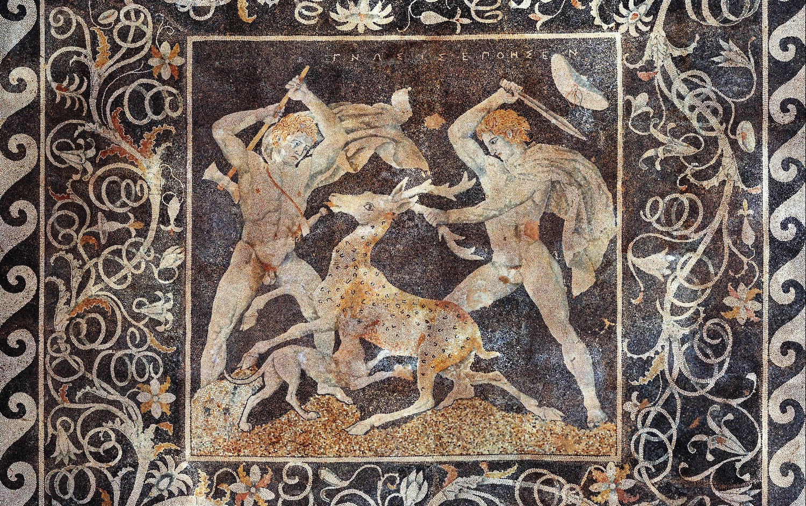
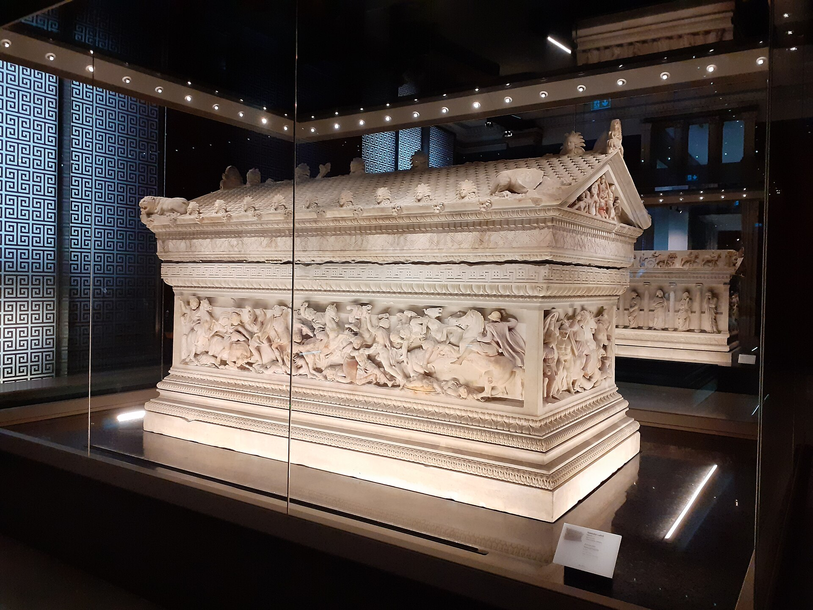

Alexander III of Macedon crossed into Asia in 334 BC with an army of around forty thousand, and over the next eleven years he destroyed the largest empire the world had ever seen, fought his way through Persia, Egypt, Central Asia, and into India, and never lost a pitched battle. It is tempting to explain this by sheer force of personality, and the personality was real. But Alexander won because he commanded the most advanced military system of its age, a system his father Philip II had spent twenty years engineering, and because he used it with a combination of discipline and daring that his enemies, for all their numbers, could never answer. What follows is how that machine actually worked: the weapons, the formations, the doctrine, the sieges, the supply, and the man at the point of the wedge.
The single most important fact about Alexander's army is that he did not build it. His father, Philip II of Macedon, did. When Philip took the throne in 359 BC, Macedon was a backward kingdom on the edge of the Greek world with a militia that lost to its neighbors. Philip rebuilt it into the first truly professional standing army in Europe: full-time, paid, drilled year-round, and loyal to the crown rather than to city or clan. He rearmed the infantry with a fearsome new pike, reorganized them into a deep pike phalanx, forged the Macedonian nobility into a shock cavalry arm, added engineers and siege trains and light troops, and welded the whole thing into a combined-arms force in which each part covered the weakness of the others. The reform reached the soldier's back: Frontinus records that Philip banned baggage carriages, allowed the infantry one servant per ten men, and made each soldier carry thirty days' flour on his own shoulders. He even renamed the commoner infantry pezhetairoi, "foot companions," extending the king's aristocratic title down to the peasant ranks and binding them to the crown rather than to the regional barons. By the time Philip was murdered in 336 BC, he had already conquered Greece. Alexander, at twenty, inherited a finished instrument and a corps of veteran officers who had spent their careers making it work. His genius was in the using, not the building, a distinction worth keeping in view.
The backbone of the army was the Macedonian phalanx, and its defining weapon was the sarissa, a pike of cornel wood far longer than the spear of a Greek hoplite. Theophrastus, writing in Alexander's own generation, puts the longest sarissa at twelve cubits, about five and a half meters, and Asclepiodotus gives the service range as ten to twelve cubits. A flanged iron butt-spike counterweighted the head so more shaft projected forward, anchored the pike in the ground, and fought on if the point snapped. At roughly six kilograms the weapon demanded both hands, so the phalangite traded the great hoplite shield for a sixty-centimeter pelte slung from a neck strap, leaving his left hand free on the pike. Held level, the sarissas of the first five ranks all projected ahead of the front line at once, so that an enemy charging the phalanx met a hedge of five layers of iron points before he could reach a single Macedonian, while the rear ranks angled theirs upward to screen against missiles.
The pikemen fought in files of sixteen; sixteen files made the syntagma of 256 men, the standard maneuver block, and several syntagmata formed a taxis of roughly fifteen hundred under its own general. Recruitment was territorial, and Diodorus names the brigades at Gaugamela by their home cantons: a man in the ranks stood beside neighbors and kin from his own highland valley, and shame had a face he knew. On open, level ground a phalanx in good order was effectively unbreakable from the front; nothing in the ancient world could push through that thicket of points. Its purpose in Alexander's system was precisely that: to be the anvil. The phalanx advanced, fixed the enemy's main body in place, and held it, pinning it down and absorbing its attention while the decisive blow was prepared elsewhere. The phalanx rarely won the battle by itself. It made the battle winnable by refusing to lose.

If the phalanx was the anvil, the hammer was the Companion cavalry, the hetairoi, the mounted nobility of Macedon and the finest heavy horse of the age: about eighteen hundred men at the crossing by Diodorus's count, in seven squadrons of two hundred and a royal squadron of three hundred that rode with the king. They charged in a wedge, a blunt triangle with the point forward that let them punch into a gap and then fan the breach open, a formation Philip borrowed, Arrian's tactical manual says, from the Scythians and Thracians. Their lance was the xyston, three and a half meters of cornel wood pointed at both ends so a broken shaft still fought; they carried no shields and rode without stirrups or saddle, the shock of the charge coming from horsemanship and massed momentum. They were trained to hit not the enemy's strength but his seams, the joints and gaps in the line where a wavering unit met a steady one. Alexander rode at the head of the Companions himself, at the tip of the wedge, and this was the core of his method. While the phalanx pinned the enemy center, Alexander watched for or forced open a gap, then led the Companion charge straight through it and wheeled inward to roll up the enemy line from the flank and rear. The infantry held the enemy so the cavalry could kill him. That is the hammer and the anvil, and it is the single idea at the heart of nearly every battle Alexander fought.
Between the slow phalanx and the fast cavalry there was an obvious danger: as Alexander charged ahead with the Companions on the right, a gap could open between his cavalry and the pike line, and a clever enemy could pour into it. The army was built to manage exactly this. The hypaspists, the shield-bearers, some three thousand elite infantry more mobile than the phalanx, held the hinge, the joint between the Companions and the pikemen, keeping the line connected as it flexed. Around these core units worked a whole ecosystem of supporting arms Philip had assembled: Thessalian heavy cavalry on the left, usually fighting a holding action; light cavalry and mounted scouts; Cretan archers and slingers and javelin-men; and allied and mercenary contingents from across the Greek world. It was a genuine combined-arms army, every weapon type present and each used for what it did best, at a level of integration the sprawling levies of Persia could not match.
Diodorus itemizes the force that carried this system into Asia, his line items summing to 32,000 foot and 5,100 horse; Plutarch reports the ancient estimates running from 30,000 foot and 4,000 horse up to 43,000 and 5,000, besides an advance force of some ten thousand already across. More striking is what the army lacked: money. Plutarch preserves the ledger with the sources named, Aristobulus counting only seventy talents in the war chest, Duris allowing provisions for just thirty days, Onesicritus adding that Alexander owed two hundred talents besides. Having given away nearly all the crown property before sailing, Alexander was asked by Perdiccas what he had kept for himself, and answered, "My hopes."
32,000 / 5,100 Foot and horse at the crossing, by the sum of Diodorus's line items
~10,000 Advance force already in Asia under Parmenion
70 talents In the treasury at the crossing, per Aristobulus
30 days Of provisions in hand, per Duris
200 talents Of debt on top, per Onesicritus
"My hopes" What Alexander said he had kept for himself
The expedition opened as sacred theater. At Elaeus Alexander sacrificed at the tomb of Protesilaus, the first Greek ashore in the Trojan War, asking for a luckier landing than the man who had died for it. Then, by Arrian's account, he steered the flagship across the Hellespont with his own hand, sacrificed a bull to Poseidon in mid-channel with a libation from a golden goblet, and stepped onto Asia first and in full armor, raising altars to Zeus, Athena, and Heracles on both shores. Diodorus adds the gesture that carried the legal theory of the whole war: he flung his spear from the ship into the soil of Asia, taking the continent from the gods as a spear-won prize. At Troy he garlanded the tomb of Achilles, and it is said, Arrian passes the report along with exactly that hedge, that Hephaestion did the same for Patroclus.
The gods traveled with the army in the person of Aristander of Telmessus, the expedition's seer, and Alexander managed the army's morale through its beliefs with the same care he gave its rations. At Tyre, Aristander took the omens and declared the city would fall within the month; since it was the month's last day the ranks laughed, so Alexander ordered the day reckoned as the twenty-eighth rather than the thirtieth, pressed the assault, and took the city on schedule. When the moon eclipsed eleven days before Gaugamela, an eclipse the Babylonian astronomers logged, which is why the battle is so securely dated, Aristander read it as victory within the month; Plutarch has him riding the battle line on the morning of the fight in a white mantle, pointing out an eagle over Alexander's head. No major river crossing or battle went forward without victims, and unfavorable victims, as the army would one day see in India, could stop even the king.
The two great battles against the Persian king Darius III show the system beating enormous odds. At Issus in 333 BC, fought on a narrow coastal plain that cramped the Persians' superior numbers, Alexander pinned the center with his phalanx, led the Companions in a charge across the river against the Persian left, broke it, and drove straight at Darius himself; the Great King fled, and his army disintegrated behind him. The ancient sources give Darius six hundred thousand men, a figure no modern historian accepts, though the sober estimates still leave Alexander outnumbered perhaps two or three times over. Arrian adds that in the last minutes before contact Alexander rode the line calling his officers and decorated veterans by name, so the army charged having just heard its own roll of honor.
At Gaugamela in 331 BC, on ground Darius had deliberately chosen and even leveled so his masses and scythed chariots could deploy, Alexander was outnumbered perhaps several times over. He advanced his whole line at an angle, edging to the right, drawing the Persian left out to follow him and stretching their line until a gap tore open in it. The instant it did, he wheeled the Companions and the hypaspists into a wedge and drove them through the gap straight toward Darius. Again the king fled; again the army broke. Gaugamela ended the Persian Empire, and it was won by manufacturing a hole in a much larger line and putting the decisive blow through it before the enemy could close it. The exploitation matched the blow: when Darius was later seized by his own satraps, Alexander ran him down at a pace Plutarch reckons at four hundred miles in eleven days, ending with a night ride at the head of a handful of Companions to reach the murderers' camp at dawn.


Alexander did not only win in the field. He was, unusually for a great captain, also a master of the siege, and his engineers were part of the doctrine, named men with reputations: the chief of them, Diades of Pella, wrote a treatise on his machines that Vitruvius was still consulting three centuries later, and the technical tradition remembered him simply as "the man who took Tyre with Alexander." The supreme example is Tyre in 332 BC, an island fortress nearly a kilometer offshore with walls rising from the sea, which had never fallen. Alexander built the sea into land: his army threw a causeway, a mole Diodorus calls two hundred feet wide, out along a shallow natural spit that modern coastal geoscience has found beneath the channel, and, after Tyrian fireships burned the first towers, he mounted rams and torsion catapults on a fleet of over two hundred ships as floating batteries. After seven months the walls were breached and the city stormed. The lesson repeated at Gaza that autumn, a two-month siege behind a vast earthen mound that cost Alexander a catapult bolt through the shoulder, and in India, where the rock of Aornos, which legend said Heracles could not take, fell after his men ramped the ravine in front of it to bring the catapults into range. A fortress that stopped everyone else was, to Alexander, an engineering problem with a schedule. He carried the machines, the torsion artillery Philip's men had pioneered, that turned walls from a full stop into a delay. An army that can take any city as well as win any battle cannot be waited out.
The least glamorous and most decisive part of the system was supply. Marching an army of tens of thousands, with horses and camp followers, across deserts and mountains for eleven years and thousands of miles is a logistical problem of staggering difficulty, and armies that ignore it die of hunger long before they meet the enemy. Donald Engels, who reconstructed the arithmetic, put the daily minimum at three pounds of grain and two quarts of water per man, ten pounds of grain, ten of forage, and eight gallons of water per animal, and identified the killing constraint: pack animals eat their own loads, so the army could never carry much more than ten days of rations. Alexander planned obsessively around that tether. He timed his marches to the local harvests, secured ports and river crossings and supply depots ahead of the army, used his fleet to move bulk food along the coasts, since a ship carried orders of magnitude more than a mule, and kept the baggage train lean by Philip's rule of making soldiers carry their own kit. The sustained rate for the whole army was about thirteen miles a day, with bursts no rival could match, like the column that covered some seventy miles in the two days before Issus. Modern study of his campaigns argues that the routes he took and the speed he moved were dictated as much by where the army could eat as by where the enemy was. The conquest was a triumph of supply as much as of tactics, which is exactly what an amateur overlooks and a professional builds his plan around.
Plutarch, drawing on the court journals, preserves the shape of an ordinary day on campaign. Alexander rose and sacrificed to the gods, took breakfast sitting, and spent the day hunting, administering justice, arranging military affairs, or reading. The morning sacrifice framed the whole life: in his final illness at Babylon the Royal Diaries record him carried out on a couch, day after failing day, to offer the prescribed sacrifices, the last routine he surrendered. He slept with a dagger under his pillow, and beside it the copy of the Iliad that Aristotle had prepared for him, which Plutarch says he regarded as a field manual of the soldier's art; when the most precious casket in Darius's captured treasure was brought in and his friends debated what deserved to be kept in it, he chose the Iliad, and the book was known ever after as the casket copy.
Hunting was recreation, training, and social test at once. His journals record fox and bird hunts for diversion; the great hunts were nearer to war. At the game park of Bazaira a lion of unusual size charged him, Lysimachus stepped in with his hunting spear, and Alexander pushed him aside and killed the beast with a single wound, after which the Macedonians decreed, "after the custom of their nation" as Curtius puts it, that the king should no longer hunt on foot or without an escort, an army legislating on the body of its own monarch. The dinner table enforced the same standard: by Macedonian custom, Hegesander records, no man might recline at dinner until he had speared a wild boar without using a net, and Cassander, the regent's son and a brave hunter, was still eating sitting upright at thirty-five.

Evenings ran long. Plutarch insists the king's reputation as a heavy drinker was overdone, arising "from the time which he would spend over each cup, more in talking than in drinking," for the symposium doubled as his counsel chamber. With food he was austere, passing the rarest delicacies down the table to his companions until nothing remained for himself, though he would then sleep until midday, and he liked to say that sleep and sex reminded him he was mortal. And he made himself seen: after the Granicus, Arrian says, he visited every wounded man, asked how and in what action the wound was taken, and allowed each man "to speak and brag of their own deeds"; the license to boast is in the text itself. The most famous gesture survives in two versions that cannot both be right: Plutarch sets the refused helmet of water during the desperate pursuit of Darius, handed back untasted to men carrying it for their own sons, while Arrian sets it in the Gedrosian desert, poured out on the ground in sight of the whole army, and calls it above all Alexander's deeds proof of his endurance and skill in command. In both tellings the army decided on the spot that it was no longer thirsty.
The institutions around the king did the quiet work of manufacturing officers. From Philip's time, the sons of Macedonians who held high office entered court at puberty as Royal Pages, guarding the king while he slept, bringing his horse and helping him mount, and riding with him in the rivalries of the hunt. Curtius adds that they ate seated in the king's presence, that no one but the king himself had the power to flog them, and that the corps was "a kind of seedbed of generals and governors"; modern historians add the unstated function of holding the barons' sons as sureties for their fathers' loyalty, an inference the sources never state outright. The system could bite the king who ran it. On a hunt in 327 the page Hermolaus speared a boar the king had marked for himself; Alexander had him scourged before his fellows, and the humiliated boy recruited other pages to kill the king in his sleep, the very thing their office existed to prevent. The plot leaked through a lover, the conspirators were stoned to death, and the affair also destroyed the historian Callisthenes, implicated as their teacher.
Callisthenes was already a marked man, because he had wrecked the most delicate experiment of the reign. Alexander had staged an attempt to introduce proskynesis, the Persian prostration before the king, at a banquet where each guest by prearrangement drank from a golden cup, prostrated himself, and received a kiss from the king; Callisthenes drank, skipped the prostration, and came forward for his kiss anyway, remarking when refused that he went away the poorer by a kiss. Macedonian disgust at the ceremony was so plain that Alexander dropped it for Macedonians: free men bowed to gods, not to kings, and their king had to live with that. Above the pages stood the somatophylakes, the Royal Bodyguards, an office of the realm fixed at exactly seven men and expanded to eight only once, for Peucestas, who had covered the fallen king with his shield among the Malli; Arrian's list of its holders, Hephaestion, Perdiccas, Ptolemy, Lysimachus and the rest, reads like a prophecy, for these men became the Successor kings. And beneath everything ran the oldest institution of all, the army in assembly: Curtius states it as long-established Macedonian practice that in capital cases the king conducted the trial while the army acted as jury, and that the king's standing counted for nothing there unless he had earned it beforehand.
The human system that carried all this was distinctively Macedonian. The army was a professional force, drilled constantly, and its officers came up through the institutions just described, the pages' corps at the bottom and a deep bench of veteran generals, many of them Philip's men, at the top. The army retained its old tribal tradition of assembly, gathering to acclaim a king or, on occasion, to refuse him, so that the soldiers were participants, not merely tools; when they finally halted the conquest at the Hyphasis river in India in 326, they did it by collectively refusing to go farther. Arrian tells the scene properly: Coenus, a senior phalanx general, spoke for the exhausted army; Alexander broke up the conference in anger and shut himself in his tent for three days, waiting for a change of heart that never came; he then sacrificed for the crossing, the victims proved unfavorable, and only then did he announce the march home, marking the limit of the advance with twelve colossal altars to the twelve gods. The theology gave both sides an honorable exit, since it was the gods rather than the mutineers who had turned the king back.
The bond with the ranks was kept with an accountant's thoroughness. After the Granicus the fallen Companions were cast in bronze by Lysippus, the dead were buried with their arms, their parents and children were exempted from taxes and services, and even the enemy dead were buried with honor. At Susa in 324 Alexander paid the entire army's debts, setting tables of money in the camp and, when the men hung back fearing a trap, ordering that no names be recorded; Arrian puts the bill at twenty thousand talents, Plutarch and Diodorus nearer ten thousand. The last acts of the reign strained to bind two worlds together. At Susa he married two Persian royal women and gave Iranian noble brides to his officers, around eighty couples by Arrian's count, ninety-two by the chamberlain Chares, with wedding presents for the ten thousand rank-and-file who had married Asian women. At Opis, when he announced the discharge of veterans unfit for service, the army erupted and jeered that he could go on campaigning with his father Ammon; he had thirteen ringleaders led to execution, then broke the mutiny by transferring Macedonian titles and formations to Persians until the Macedonians cast their weapons before the palace gates in supplication. He declared them all his kinsmen, and the reconciliation banquet seated nine thousand men drawing wine from one bowl, Greek prophets and Persian Magi opening the rites together, while Alexander prayed for harmony and community of rule between the two peoples. Ten thousand veterans then marched home under Craterus with full pay for the journey and a talent each.
Above all, Alexander led from the front. He rode at the point of the Companion wedge, was wounded repeatedly, nearly died more than once, and shared the hardship of the march. This was tactically useful, the cavalry charge needed a leader at its head, but it was mainly a bond: an army will follow into anything a commander who bleeds where they bleed.

334 BC Crosses into Asia with ~40,000 men
4.5-5.5 m Length of the sarissa pike (10 to 12 cubits)
16 ranks Standard depth of the phalanx; 256 men to a syntagma
Hammer & anvil Phalanx pins, Companion cavalry breaks
332 BC Tyre falls after a 7-month siege and a sea-mole
331 BC Gaugamela ends the Persian Empire
0 Pitched battles lost in eleven years
Alexander's way of war is the ancient world's clearest lesson in the power of a well-built system driven by a decisive operator, and it carries the same double edge as Napoleon's. The instrument was superb: a combined-arms army in which pike, horse, light troops, engineers, and supply all worked as one, every part covering the others, run on a single coherent doctrine of pin-and-break. But notice the two halves of the story. Alexander did not build the machine; Philip did, across twenty patient years of reform, and Alexander inherited it finished. And Alexander built nothing to outlast himself. He died at Babylon in June 323, at thirty-two, after ten days of fever, with no settled succession; he is said to have whispered that the empire should go "to the strongest," though the best sources report him past speech by the end, and the likelier tradition has him pressing his signet ring into the hand of Perdiccas. Within three years Perdiccas was murdered by his own officers, within two decades Alexander's son, half-brother, and widow had all been killed, and after Ipsus in 301 the empire's division was permanent. The conquest was a personal triumph resting on an institutional foundation his father had laid, and because Alexander added no comparable foundation of his own, the winnings did not hold.
That is the pattern this organization exists to break. The competence, combined arms, integration, logistics, decisive concentration, leadership from the front, is real, teachable, and transferable across two thousand years, from a Macedonian pike line to a modern corps to the work of building a city. But brilliance that is not built into a durable institution dies with the brilliant. Philip's lesson is the constructive one: the patient, unglamorous, twenty-year work of building the machine is what makes the victories possible. Alexander's is the cautionary one: without an institution to hold them, even total victories evaporate. We are here to do Philip's work and to avoid Alexander's ending.
We study how capable systems get built and how they last. Tell us who you are.
Sources. The ancient narratives: Arrian, Anabasis of Alexander (Chinnock translation), with his Ars Tactica on the cavalry wedge; Plutarch, Life of Alexander (Perrin translation); Quintus Curtius Rufus; Diodorus Siculus, Book 17; Justin. On the technical system: Theophrastus and Asclepiodotus on the sarissa and the syntagma; Frontinus, Strategemata, on Philip's marching reforms; Athenaeus (quoting Hegesander and Chares) on the customs of court and table; Vitruvius and Athenaeus Mechanicus on Diades' siege machines. Modern scholarship: Donald Engels, Alexander the Great and the Logistics of the Macedonian Army (1978); J.F.C. Fuller, The Generalship of Alexander the Great; N.G.L. Hammond, The Macedonian State; Waldemar Heckel, The Marshals of Alexander's Empire; Joseph Roisman on the Macedonian assembly; Nick Marriner and colleagues, PNAS (2007), on the geology of the Tyre mole. Compiled July 2026.